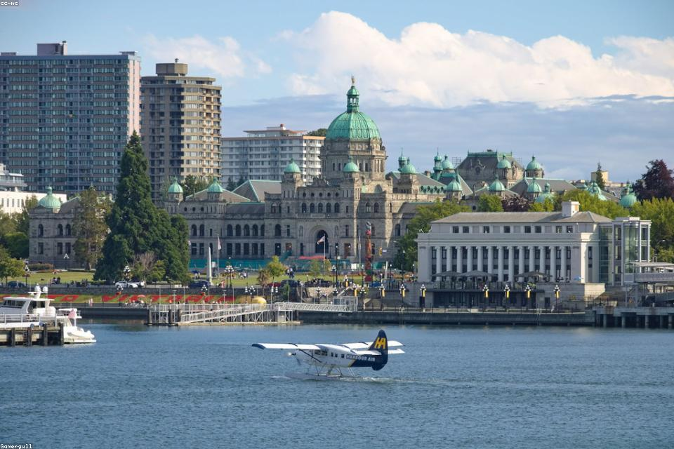
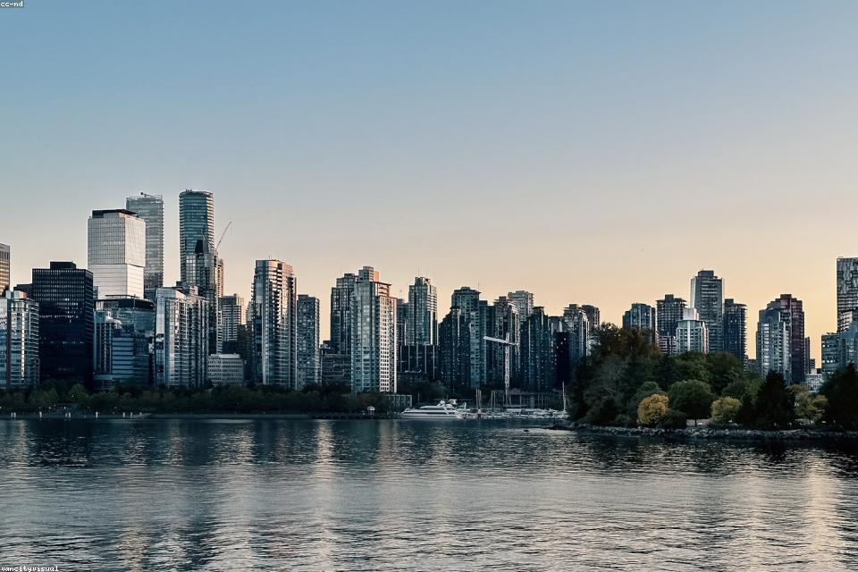
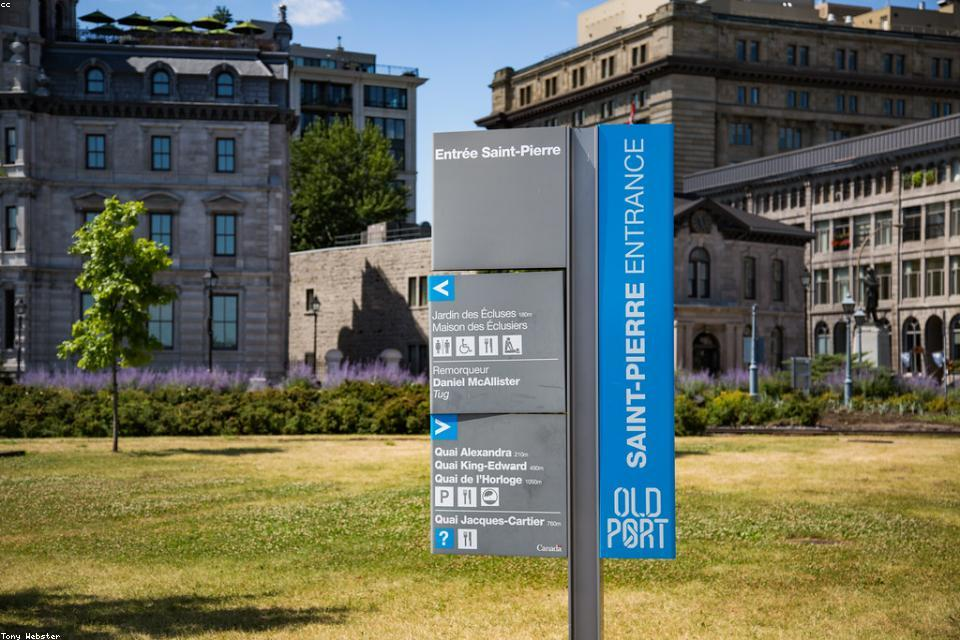
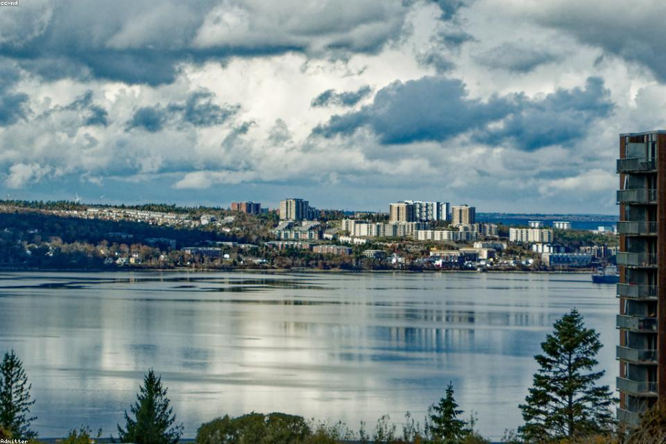

加拿大城市之旅
自西向东 · 太平洋 → 大西洋
- 1. 维多利亚 Victoria
- 2. 温哥华 Vancouver
- 3. 班夫 Banff
- 4. 多伦多 Toronto
- 5. 蒙特利尔 Montréal
- 6. 哈利法克斯 Halifax
维多利亚Victoria
不列颠哥伦比亚省首府 · 温哥华岛
- 英式花园城市，全年温和宜人
- 内港夜景与议会大厦
- 布查特花园 — 世界著名私家花园
- 观鲸、骑行、海滨漫步

温哥华Vancouver
不列颠哥伦比亚省 · 加拿大西海岸门户
- 斯坦利公园与城市天际线
- 格兰维尔岛市场与公共艺术
- 格劳斯山俯瞰全城与海湾
- 多元文化融合，亚洲美食天堂

班夫Banff
艾伯塔省 · 加拿大落基山脉
- 加拿大第一座国家公园
- 露易丝湖、梦莲湖 — 翡翠色高山湖泊
- 班夫温泉与硫磺山缆车
- 徒步、滑雪，邂逅麋鹿与黑熊
多伦多Toronto
安大略省 · 加拿大最大城市
- CN 塔 — 北美标志性地标
- 皇家安大略博物馆与卡萨罗玛城堡
- 古酿酒厂区与湖滨步道
- 可一日游尼亚加拉大瀑布
蒙特利尔Montréal
魁北克省 · 北美法式风情之都
- 老港与老蒙特利尔石板街
- 圣母大教堂与蒙特利尔塔
- 蒙特利尔国际爵士音乐节
- 双语文化、法餐与百吉饼

哈利法克斯Halifax
新斯科舍省 · 大西洋沿岸门户
- 滨海步道与活跃渔港
- 城堡山国家历史遗址
- 佩吉湾灯塔 — 经典大西洋风光
- 新鲜龙虾与泰坦尼克号海事历史

欧洲
- 🇩🇪 科隆
- 🇬🇧 伦敦
- 🇫🇷 巴黎
- 🇮🇸 雷克雅未克
- 🇪🇸 马德里
- 🇮🇹 罗马
- 🇬🇷 雅典
- 🇬🇷 伊利奥斯爱琴海
- 🇹🇷 伊斯坦布尔
亚洲
- 🇨🇳 大好河山
- 🇦🇪 迪拜
- 🇹🇭 曼谷
- 🇰🇷 首尔
- 🇯🇵 东京
美洲
- 🇺🇸 西姆斯教堂
- 🇺🇸 夏威夷
- 🇺🇸 拉斯维加斯
- 🇺🇸 纽约
- 🇺🇸 奥兰多
- 🇧🇷 里约热内卢
非洲 · 大洋洲
- 🇪🇬 开罗
- 🇿🇦 开普敦
- 🇦🇺 悉尼
- 🇦🇺 墨尔本